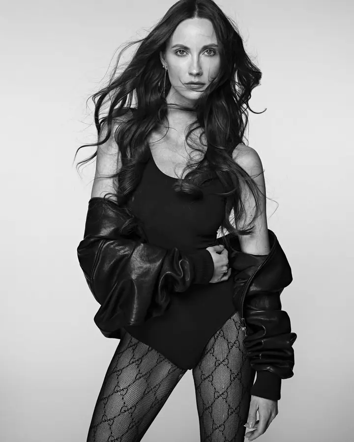
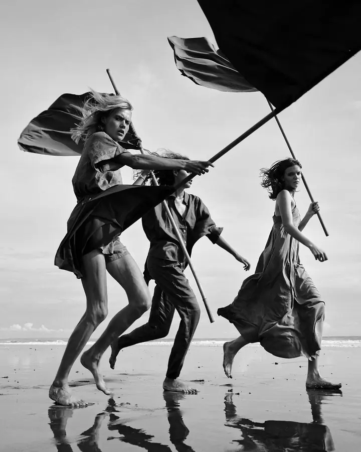

Portréty
Osobní portréty pro jednotlivé klienty i pro rodiny. Pomůžu vám uvolnit se a citlivě vás navedu do póz, abyste na fotkách byli opravdu vy.

Portrétní, módní a reklamní fotograf
Jmenuji se Lukáš Dvořák a fotografii se věnuji přes dvacet let. Začínal jsem v módě v Miláně, dnes fotím portréty, editorialy i firemní a reklamní kampaně. Nejvíc mě na tom všem baví práce s lidmi.
Zeptat se na termín
Osobní portréty pro jednotlivé klienty i pro rodiny. Pomůžu vám uvolnit se a citlivě vás navedu do póz, abyste na fotkách byli opravdu vy.
Vyšel jsem z práce pro módní magazíny. Fotím módní editorialy, ve kterých jde o emoce a přirozené vyznění lidí.
Firemní portréty, interiéry, kampaně na šperky, beauty a kosmetiku. Velké mezinárodní zakázky mě baví stejně jako menší projekty.
V roce 2007 jsem se přestěhoval do Milána a začal fotit módu. Postupně k tomu přibyla komerční a reklamní fotografie a také volné umělecké projekty. Vydal jsem tři autorské knihy, měl přes třicet samostatných výstav po světě a jsem globálním ambasadorem Fujifilm X-Photographer.
Fotím hlavně lidi. Auta ani sklo mě nelákají. Umím pracovat s emocemi, dobře komunikuji a lidi před objektivem citlivě navedu do póz. Protože jsem vyrostl na práci pro módní magazíny, zvládnu nasvítit celou scénu, ale stejně rád pracuji s denním světlem.
Mám za sebou velké mezinárodní zakázky, třeba globální kampaň pro Baťu: sedm dní focení, dvě stě vizuálů a pětatřicet lidí na place. Stejně rád ale dělám i střední a menší projekty, kde můžu ukázat, co umím. Klienti oceňují můj klid na place a to, že najdu řešení v každé situaci.
Napíšete mi, co potřebujete, a společně ujasníme cíl focení, styl a k čemu budou fotky sloužit.
Vybereme lokaci nebo ateliér, rozmyslíme světlo, styling a případně tým, který bude na place potřeba.
Na place pracuji v klidu. Navedu vás do póz a hledám momenty, kde působíte přirozeně a s emocí.
Z focení vyberu nejsilnější snímky, pečlivě je upravím a předám vám je v dohodnutém formátu.
Moje práce je zaměřená hlavně na lidi. Fotím kampaně na šperky, beauty a kosmetiku i interiéry, ale auta ani sklo nefotím.
Vůbec ne. Dobře komunikuji a citlivě vás navedu do póz, abyste se cítili uvolněně a na fotkách působili přirozeně.
Obojí. Díky práci pro módní magazíny umím nasvítit celou scénu, ale rád pracuji i s přirozeným denním světlem.
Ano, pořádám skupinové workshopy v češtině i osobní workshop jeden na jednoho. Aktuální termíny najdete na mém webu.